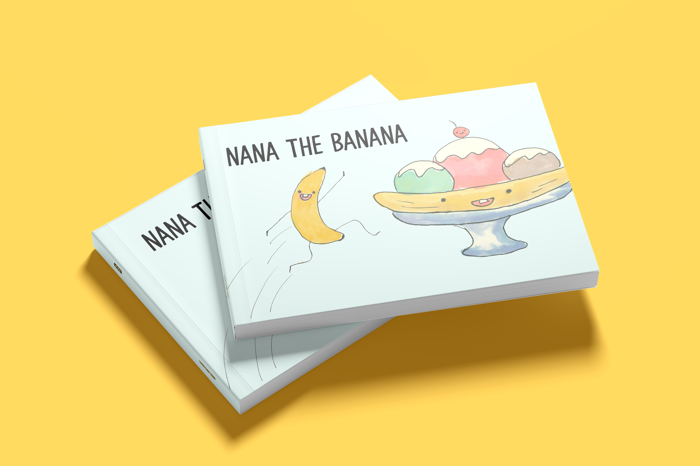
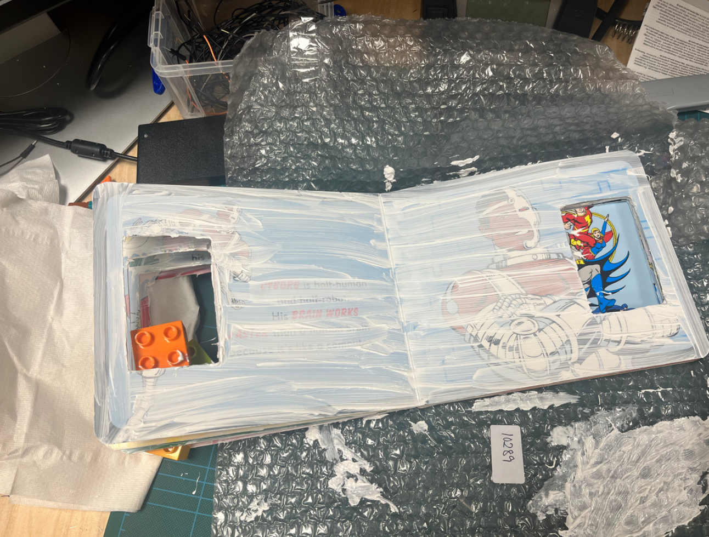
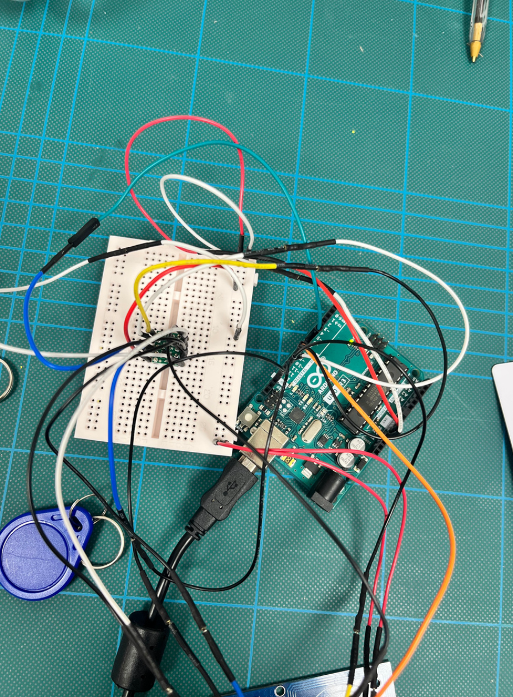
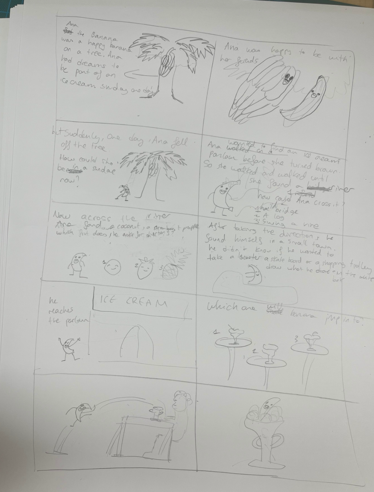
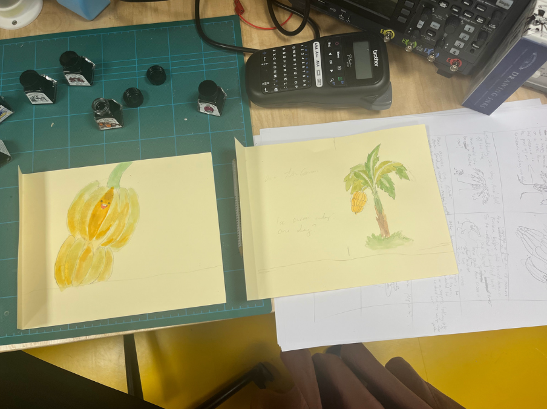
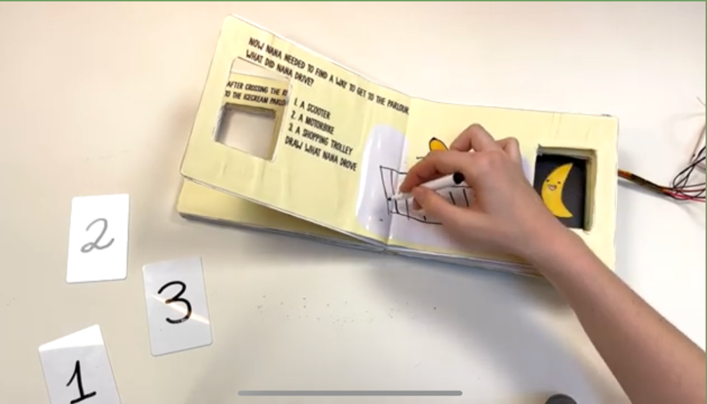
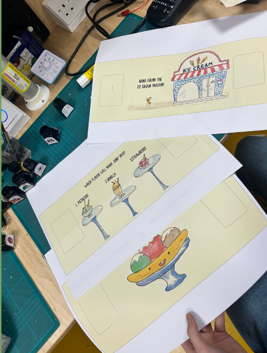
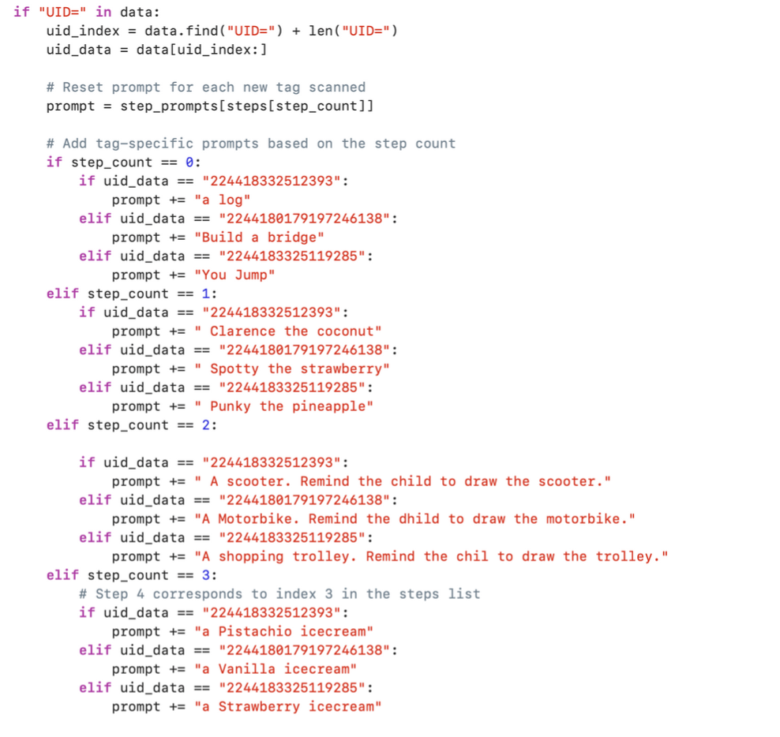

"Nana the Banana " is a dynamic children ' s storybook that redefines the parent-child reading experience through interactivity and narrative variability. With the integration of the GPT API and a RFID tag reader implemented with Arduino, each storytelling session becomes a unique journey, shaped by real-time choices and the child' s engagement. The story of "Nana the Banana " acknowledges the timeless charm of children ' s literature, and propels it into the modern age by artificial intelligence and interactive hardware.

I started by 3d printing the cover for the RFID tag reader. I hand-cut the shape of the cover on each individual page. I also painted the pages white in case any colors showed through the pages.


I then setup the RFID tag reader on the Arduino and worked on the code to send the data to the python sketch.

I hand drew the story board and wrote the narrative for the story. Here is where I organised and planned what I needed to draw.

I hand drew the storyboard images using Indian Ink and card. I then scanned these drawings to later re-print with the narrative.

I hand drew the storyboard images using Indian Ink and card. I then scanned these drawings to later re-print with the narrative.

The generative nature of the story made it difficult to know what to draw on the page to reflect it, as it was a different answer every time. This is how I came to the idea of adding a whiteboard paper to the page so that the child could draw the story as it was narrated, which allowed them to have creative freedom and make them feel part of the story.

After scanning the images and measuring the dimensions, I edited them in photoshop and added the narrative. I printed them in A3 so I could cut them and stick them to the book. I also cut the hole for the RFID tag reader.

The main part of the code is this logic shift that waits for a tag to be read. In each loop, the assigned prompt that is sent to GPT changes depending on what page the child is on. The prompt is crafted and changes depending on the page and the child' s choice. The code also reads the text out loud using the elevenlabs API.